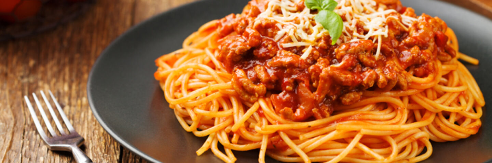

Spaghetti Bolognese

Description
Everyone needs a great everyday Spaghetti Bolognese recipe, and this is mine! The Bolognese Sauce is rich,
thick and has beautiful depth of flavour. It's perfect for a quick midweek meal but even better if you can simmer it for a couple of hours!
Ingredients Needed
- 1 tbsp olive oil
- 200g of minced beef
- 2 onions, finely chopped
- 2 carrots, finely chopped
- 2 celery sticks, finely chopped
- 2 garlic cloves, finely chopped
- 2-3 leaves of Italian Basil, whole
- 2-3 sprigs of rosemary leaves, finely chopped
- 1 can of 200g plum tomatoes
- 1 tsp of dried oregano
- 2 fresh bay leaves
Steps
- Put a large saucepan on a medium heat and add 1 tbsp olive oil.
- Add the 2 onions, 2 carrots, 2 celery sticks, 2 garlic cloves and the leaves from 2-3 sprigs rosemary, all finely chopped, then fry for 10 mins. Stir the veg often until it softens.
- Increase the heat to medium-high, add 200g of minced beef and cook stirring for 3-4 mins until the meat is browned all over
- Add 2 tins plum tomatoes, the finely chopped leaves from ¾ small pack basil, 1 tsp dried oregano, 2 bay leaves, 2 tbsp tomato purée, 1 beef stock cube, 1 deseeded and finely chopped red
chilli (if using), 125ml red wine and 6 halved cherry tomatoes. Stir with a wooden spoon, breaking up the plum tomatoes.
- Bring to the boil, reduce to a gentle simmer and cover with a lid. Cook for 1 hr 15 mins stirring occasionally, until you have a rich, thick sauce.
- Add the 75g grated parmesan, check the seasoning and stir.
- When the bolognese is nearly finished, cook 400g spaghetti following the pack instructions.
- Drain the spaghetti and either stir into the bolognese sauce, or serve the sauce on top. Serve with more grated parmesan, the remaining basil leaves and crusty bread, if you like.